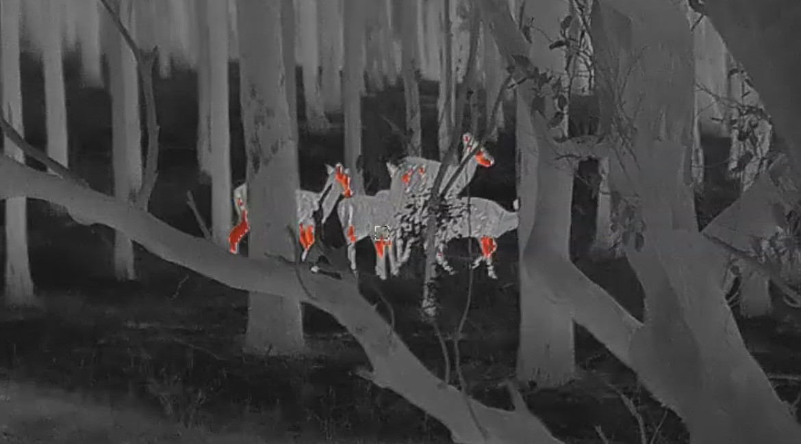

Understanding pest animals
Feral Deer
Increasing Pressure on Landscapes

Several introduced deer species have established wild populations in Australia.
Where deer numbers increase, their combined grazing, browsing and trampling can significantly alter vegetation and landscapes.
Environmental impacts
Deer may:
- browse native shrubs and young trees
- suppress vegetation regeneration
- trample sensitive vegetation
- disturb soils
- create erosion
- spread weeds
- damage habitat used by native wildlife.
Repeated browsing can gradually change the structure of native vegetation and reduce the abundance of preferred plant species.
Agricultural impacts
Deer can also damage vineyards, crops, pasture, orchards, fences, revegetation and landscaped areas.
Vehicle collisions and movement may create additional management concerns.
Why management is important
Deer populations can be difficult to manage once well established. Targeted control can help reduce localised impacts and protect agricultural, environmental and property values.
Need help with feral deer?
FEMS can discuss the species, site and impacts you are experiencing and determine whether targeted control is appropriate.
Make an Enquiry